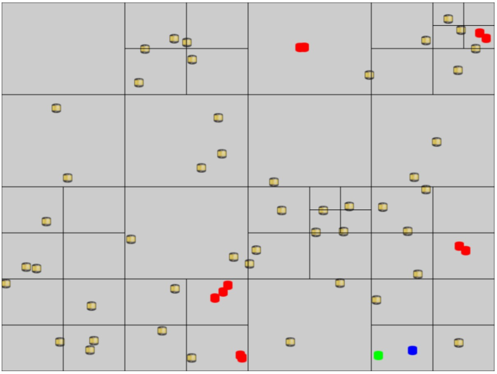

NOTE: You should run the games using the Chrome web browser. Explore 11 does not support AudioContext and Mozilla Firefox (v 39.0) does not support GLSL shaders and thus will not allow the games to run.
|
Developers Josh Max Daniel Smith |
Emitter and Shadow Our module supports 2D shadows. Users can create light objects that brighten the scene, and Renderables create shadow by blocking light. Our module provides an EmitterSource class that emits light, brightening the appropriate region. When a Renderable occupies a lit region, it creates an unlit region where a shadow would appear. Light regions are brightened, and unlit regions are darkened. Our module only supports one lighting model, PointEmitterSource, which emits light in all directions to a specified distance. Our module supports multiple PointEmitterSource objects and allows developers to specify color, luminosity, and range for each. Links to: Demo of API API documentation.
|
|
Developers Camden D. Brewster Matthew Munson |
Terrain Geneation System Our system provides a tile map to support random terrain generation with pre-defined shape and vegetation generation. Links to: Demo of API API documentation Tutorials on using the API.
|
|
Developers Cody Thayer Jordan Lawson |
Quad Tree System The Quad Tree system is designed to be used in lue of basic collision checking, rather than checking every object with every object that could possibly collide in the entire world space. You can just check objects nearby for collisions.  Links to: Demo of API API documentation Tutorials on using the API.
|
|
Developers Jonathan Cho David Kim |
Grid System Grid system API and utilities to support creation and integration of grids in games. Links to: Demo of API API documentation.
|
|
Developers Josh Kennedy Marc Skaarup Quan Nghiem |
Object Groups The GameObject hierarchy is designed to make linking GameObjects and their transforms together as simple as possible. It gives each GameObject the ability to set a single parent, and any number of children. The transforms of the children will reflect the changes made to the transforms of all parents, grandparents, etc. of that GameObject. Links to: Demo of API API documentation.
|
|
Developers Isaiah Snow Matthew Taing |
A* Search Support Integration of path finding functionality into the game engine. Links to: Demo of API API documentation Tutorials on using the API.
|
|
Developers Bill Pham Phuc Tran |
Dialog System This is the dialogue module which will allow you to create a dialogue system in the game engine. The module will be able to display a series of dialogue scenes as described in a json file. The module will also allow you to create branching dialogue through the use of option buttons. You can customize the look of the dialogue and the options. Links to: Demo of API API documentation and tutorials.
|